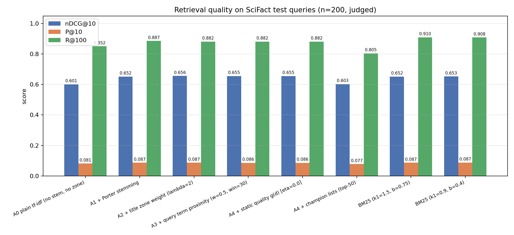
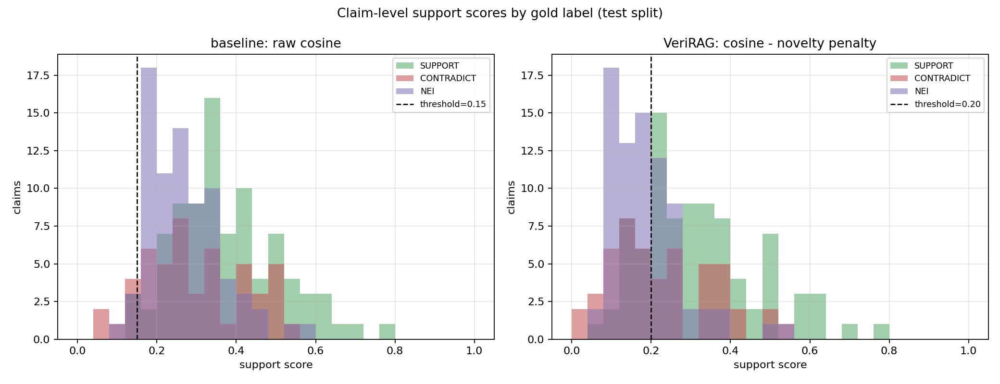

Track T1 asks for a RAG system that produces trustworthy answers: every generated sentence must cite retrieved evidence, and the system must be able to check its own citations. We deliberately avoid embeddings and vector databases so that every score a user sees can be explained by classical IR concepts (document frequency, zone weights, term proximity, cosine similarity).
Dataset. BEIR SciFact: 5,183 scientific abstracts, 300 test claims, each with gold evidence documents and sentence-level evidence labels (SUPPORT / CONTRADICT; unlabeled claims treated as NEI). We split the 300 judged claims deterministically — sorted qids, first 100 = dev (all hyper-parameter tuning), remaining 200 = test (reporting only). Nothing was tuned on test.
Contributions. (i) a complete, inspectable IR engine written from scratch (tokenizer, Porter stemmer, inverted index with skip pointers and champion lists, Boolean/phrase/zone parser, term-at-a-time ranking); (ii) a chunking study of the classic “what is a document?” decision under both retrieval and citation-granularity objectives; (iii) a lightweight novelty penalty for citation verification that demotes answers whose claim terms are absent from the cited chunk, evaluated against Jaccard and cosine baselines on SciFact labels; (iv) a dev/test ablation ladder quantifying each IR component.
text.py) and validated against NLTK's
ORIGINAL_ALGORITHM mode over all 29,699 distinct corpus terms: 18 mismatches remain
(99.94% agreement) — 12 involve non-ASCII characters (ı-ligatures, µ, ß)
where our tokenizer normalizes Unicode first, and 6 are plain-English edge cases (e.g. achilles,
organelle) where the 1980 reference implementation's rules differ; none of the 18 appear in
any of the 300 benchmark claims."..."), field restrictions (title:, body:), AND/OR/NOT;
positional intersection verifies phrase adjacency. Execution produces a query-processor trace
(e.g. “df-ordered AND: rarest term first, skip to B while 138 > 41”) shown by
python -m verirag bool.We index chunks but evaluate and cite at parent-document granularity. Four strategies were compared on the test split (final ranking parameters fixed from dev):
| chunking strategy | chunks | nDCG@10 | P@10 | R@100 | MRR@10 |
|---|---|---|---|---|---|
| whole: 1 chunk per document | 5,183 | 0.6732 | 0.0885 | 0.9215 | 0.6286 |
| fixed: 120-token windows, 30 overlap | 13,154 | 0.6606 | 0.0870 | 0.8965 | 0.6145 |
| sentence: 5 sentences, step 3 | 13,327 | 0.6657 | 0.0865 | 0.8940 | 0.6199 |
| sentence: 3 sentences, step 2 (chosen) | 21,233 | 0.6553 | 0.0860 | 0.8815 | 0.6125 |
Whole documents win document-level retrieval (full tf-idf mass, no signal dilution) but cannot produce span-level citations. We accept a −1.8 nDCG cost for sentence-granular chunks because the whole purpose of Track T1 is citable evidence spans: the verifier and the evidence-recall metric operate on the cited chunk, not on a 400-token abstract. The fixed-window row shows the trade-off is about granularity, not about sentence boundaries specifically.
MMR sentence selection. The extractive generator is a re-ranking post-processor over the retrieved sentences: sentences are scored by tf-idf similarity to the claim and then selected with maximal marginal relevance (λ = 0.7) so consecutive sentences do not repeat the same evidence. IR still decides which evidence reaches the answer.
Optional LLM generation. An OpenAI-compatible generator (--llm) consumes the
same retrieved chunks as context and is then scored by the same IR-based citation verifier; it is
declared and runs only when invoked, and it is not part of the reported tables (the benchmark is the
deterministic path).
Deliberate exclusions. We do not use dense embeddings or vector stores. The track's core demand — inspectable retrieval and traceable citations — is better served by classical IR, and every score a user sees is explainable with lecture concepts. Dense retrieval would be an additive recall layer whose outputs still pass through the same citation verifier (see roadmap).
Answers with citations. The default generator is extractive and deterministic: sentences of
retrieved chunks are scored by tf-idf similarity to the claim and re-selected with MMR
(λ = 0.7) for diversity; each emitted sentence carries its source chunk rank as a
citation [k]. An OpenAI-compatible LLM generator (--llm) uses the
same retrieved chunks as context and is verified by the same machinery; it is optional and not part of
the reported tables.
Citation verifier (verifier.py). For each generated sentence s cited at rank k:
support(s, k) = min(1, cos(s, chunk_k) × (1 − min(1, 0.6 · novelty(s, chunk_k)))) novelty(s, chunk_k) = Σ idf(t) [t ∈ terms(s) ∉ chunk_k] / Σ idf(t)
Cosine is computed directly from the inverted index (no document vectors are materialized). The novelty penalty down-weights sentences whose rare claim terms are lexically absent from the cited chunk — the classic symptom of an unfaithful citation. Two dev-tuned hyper-parameters (weight 0.6, form = multiplicative, SUPPORT threshold = 0.20, WEAK ≥ 0.12) were selected on the dev split by F1. A citation-mismatch flag is raised when a different retrieved chunk supports the sentence by >0.10, even if the cited chunk passes.
Protocol: all θ chosen on dev (100 claims); tables below are test-only (retrieval n = 200, verifier n = 214 claim–document items including CONTRADICT and NEI as negatives). Metrics: nDCG@10, P@k, R@100, MRR@10; verifier P/R/F1/accuracy for SUPPORT detection. Charts and CSVs are written by the CLI itself.
| configuration | nDCG@10 | P@5 | P@10 | R@100 | MRR@10 | ms/query |
|---|---|---|---|---|---|---|
| A0 plain tf-idf (no stem, no zone) | 0.6010 | 0.1410 | 0.0810 | 0.8515 | 0.5558 | 16.6 |
| A1 + Porter stemming | 0.6522 | 0.1630 | 0.0865 | 0.8865 | 0.6044 | 35.7 |
| A2 + title zone weight (λ=2) | 0.6561 | 0.1640 | 0.0870 | 0.8815 | 0.6083 | 26.9 |
| A3 + term proximity (w=0.5, win=30) | 0.6553 | 0.1640 | 0.0860 | 0.8815 | 0.6125 | 64.9 |
| A4 + static quality g(d) [η=0.0, dev-tuned] | 0.6553 | 0.1640 | 0.0860 | 0.8815 | 0.6125 | 69.1 |
| A4 + champion lists (top-50) | 0.6031 | 0.1360 | 0.0775 | 0.8049 | 0.5653 | 5.7 |
| BM25 (k1=1.5, b=0.75) | 0.6517 | 0.1550 | 0.0870 | 0.9098 | 0.6075 | 30.7 |
| BM25 (k1=0.9, b=0.4) | 0.6533 | 0.1550 | 0.0875 | 0.9085 | 0.6097 | 32.0 |


Reading the table. Stemming is the decisive component (+5.1 nDCG), title zones add +0.4;
the full system (A2/A3) matches or exceeds both BM25 variants while remaining a plain tf-idf
system. Proximity is neutral on nDCG but improves MRR (+0.004), i.e. it promotes the right document
into rank 1 more often — consistent with its design goal of rescuing exact phrase matches;
it costs latency, so it is a tunable switch. Static quality g(d) was dev-tuned to zero — a
genuine null result we report rather than hide. Champion lists deliver an 11× speed-up
(5.7 ms vs 64.9 ms per query) at −5 nDCG points: a classic efficiency/accuracy
trade-off exposed as a CLI flag (--champions).
| method | P | R | F1 | acc |
|---|---|---|---|---|
| Jaccard overlap (dev-tuned τ=0.05) | 0.396 | 0.724 | 0.512 | 0.439 |
| cosine only (dev-tuned τ=0.15) | 0.414 | 0.966 | 0.579 | 0.430 |
| VeriRAG: cos × (1 − 0.6·novelty) | 0.565 | 0.805 | 0.664 | 0.668 |
Dev F1: ours 0.656 vs cosine 0.640 — the dev margin is small; the test gap (+0.085 F1) should be read with that caution.
| answer stage (n=87) | gold-sentence recall |
|---|---|
| baseline: first sentence of top-1 chunk | 0.103 |
| VeriRAG extractive answer (3 sentences) | 0.575 |
| retrieval stage (n=137) | value |
| hit@5 / hit@10 | 0.854 / 0.854 |
| MRR | 0.705 |
Reading the tables. Cosine alone over-predicts SUPPORT (recall 0.966, precision 0.414, accuracy 0.430 — barely above the majority-class rate). The novelty penalty trades 16 recall points for 15 precision points and lifts accuracy from 0.43 to 0.67: the sentence must not only resemble the evidence, its rare terms must actually occur in the cited chunk. At the answer stage, the extractive generator puts a gold evidence sentence into its 3-sentence answer in 57.5% of cases vs 10.3% for the trivial baseline, on top of a retrieval stage with hit@5 = 0.85.
Index build (21,233 chunks, 26,319 terms): ~30 s pure Python; pickled index load <1 s; A2 query latency 26.9 ms/query single-threaded; the verifier re-scores citations in <10 ms per answer. No GPU, no native dependencies.
--llm generator is functional but not benchmarked (no stable API budget during the hack).Roadmap (if this becomes the course project). (i) a hybrid that ranks at document
granularity and cites at chunk granularity; (ii) dense retrieval as an additive recall layer with
the verifier unchanged so scores stay explainable; (iii) negation-aware entailment to separate
CONTRADICT from NEI instead of collapsing all negatives; (iv) benchmarking the --llm
generator under a fixed API budget; (v) a larger dev split or cross-validation for threshold
stability.
python -m verirag build # 30 s: chunk + index python -m verirag eval --charts # ~2 min: ladder, BM25, dev sweeps, CSV + PNG python -m verirag eval-verify --charts # ~20 s: verifier vs baselines, CSV + PNG python -m verirag ask "metformin reduces mortality in type 2 diabetes patients" --explain
Work division. Team size 1: SHRESTH designed and implemented indexing, query processing, ranking, chunking, generation, verification, evaluation, the report and the demo video; owns every component explained in the video.
AI-use declaration. As permitted by the rules, AI assistants (opencode/ChatGPT) were used for code scaffolding, debugging, cross-checking the from-scratch Porter stemmer against NLTK, and editorial help on this report. Algorithmic decisions (zone weight, proximity formulation and window, novelty penalty and its form/weight, dev/test protocol, chunking choice) were designed, questioned and validated by the author; every reported number is produced by the two CLI commands above from a cold start, and no metric in this report was produced by hand.